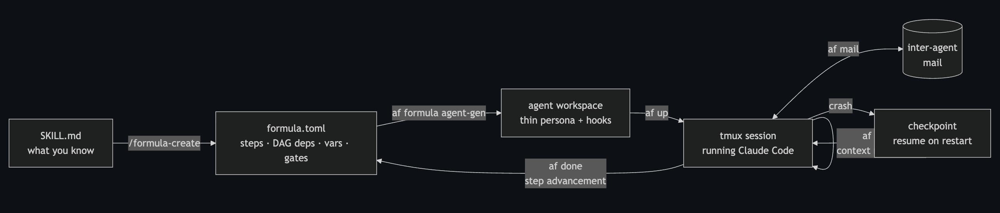

architecture-diagram.png into the editor at its spot.
Ever hand an agent a 12-step procedure and check back an hour later to find it confidently on step 9, having skipped step 6 and reinterpreted step 7? I have. A lot. I've been running Claude Code agents on real engineering work - multi-hour workflows where the steps matter and the order matters - and the agents are impressively capable. They are also unreliable in ways that are undeniably repeatable.
This article is about those failure modes and about the orchestrator I built and open-sourced to deal with them: agentfactory, a multi-agent orchestration CLI for Claude Code. I'll walk through what breaks, why it breaks, and the design that came out of watching it break over and over.
Four failure modes show up consistently. If you've run long agent sessions, I suspect you've seen every one of these.
1. Give an LLM steps to follow and at times it will use a heuristic and improvise. It skips a step, or merges two, or invents a plausible-looking alternative. It doesn't announce this. It just keeps going.
2. Recency bias drives every prompt. The file the agent just read feels more important to it than the instruction you gave it forty minutes ago. Over a long session your original instructions don't just fade, they get outcompeted by whatever entered the context most recently - real world recency bias in agentic fashion.
3. The improvisation and recency bias lead to bugs the next stretch of work builds around. False assumptions compound. The agent makes a small wrong turn, treats it as ground truth, and builds on it. By the time you notice, the mistake isn't in the last action - it happened four decisions ago.
4. There is no crash recovery. Sessions die. Terminals close, machines sleep and restart, context windows fill up and get compressed into lossy summaries. An agent that dies at step 9 of 12 restarts at step 0 with no memory that steps 1 through 8 ever happened (or worse, you restart it by hand-typing a summary of dubious accuracy).
The compression one deserves a special callout because it's the sneakiest. Claude Code sessions have a finite context window, and when it fills, the session summarizes its own history to make room. Summaries are lossy. Your careful 12-step procedure becomes "the agent is working through a multi-step process." Which step? What were the constraints on step 8? Gone. And the agent keeps right on going.
It gets more complicated when we introduce MULTI AGENT workflows, where each issue now compounds at scale. I wanted something that could bring a more six sigma oriented reliability, because even when these agents go from 85% good to 95% good -> .95x.95x.95 in a multi-agent workflow results in quality far less than the 95%.
The first thing everyone tries (I did too) is writing better instructions. A thorough SKILL.md is genuinely valuable - it's your procedure, your hard-won checklist, your discipline written down. Do write them.
But a skill enters the context once, at the start, and from that moment it's subject to everything above: compression, recency bias, improvisation. The model will follow a skill impressively well for a while, and then, statistically, it won't. The problem isn't the quality of your instructions. The problem is where your instructions live.
SKILLs aren't enough on their own to solve this. You need an agent with a better harness. It's why Claude Code has become so popular - it's the harness not strictly the LLM that makes it capable of producing a better result.
Agentfactory was built on a couple premises. Build further on the Claude Code CLI rather than replace it. And the workflow shouldn't live inside the agent's persona - it should live outside the agent, in something that can't be compressed, can't be forgotten, and can be re-asserted at any moment.
Agentfactory splits into three parts what usually gets lumped into one giant prompt:
af runtime (a Go CLI) - the bridge between them. It instantiates a formula into tracked steps, injects context, and records progress.
The agent never holds the full workflow in its head. It runs af prime to get its identity plus the current step only, executes that step, runs af done to advance, and repeats. Your 12-step plan can't be mangled by compression because the agent was never carrying it. It's in the TOML, and the TOML doesn't have a context window. This is the gastown-familiar part - the formulas/TOML/DAG approach - and it works.
A formula step looks like this:
[[steps]]
id = "run-smoke"
title = "Run smoke tests"
needs = ["check-config"]
description = """
Execute smoke test suite against {{environment}}.
"""Steps execute in dependency order and variables are substituted at instantiation time. And because the workflow is data, you can generate it: agentfactory ships a /formula-create skill that converts an existing SKILL.md into a formula, and af formula agent-gen generates a specialist agent from it. You have SKILLs - now turn your SKILL.md's into a more PREDICTABLE autonomous workforce.
This is where the harness earns its keep, and the answers all have the same shape: the state lives outside the session, so the session is disposable.
Context compression? When Claude Code is about to compress, a hook fires and agentfactory checkpoints and recycles the session. The fresh session's startup hook runs af prime, which re-injects the agent's identity and its operational state: which formula, which step, what the step says to do. The agent comes back knowing exactly what it is and exactly where it was.
One subtlety here took real iteration to get right. A generic agent re-primed after compression gets a generic identity, and a generic identity knows nothing about your formula's behavioral discipline. So af formula agent-gen bakes the formula's playbook into the agent's identity template. When compression hits, the runtime re-injects the specialist, not a generalist. The agent can't forget what it is, because what it is gets re-asserted from outside the context window.
Crash? Progress lives in runtime state on disk, not in the conversation. When an agent restarts after a hard death, af prime reads the active formula instance and resumes from the last unclosed step. Steps 1 through 8 stay done.
Try to skip a step? A fidelity gate catches and corrects it. An optional hook grades the agent's work against the current step and, when the agent drifts from the formula, sends it a correction. The agent gets pulled back onto the rails instead of compounding the drift.
Once single agents were reliable, the next thing I needed was coordination. Agentfactory gives every agent a mailbox:
af mail send supervisor -s "Fix auth bug" -m "login handler isn't checking token expiry"
af mail inbox
af mail reply <id> -m "done, PR is up"Delivery is hook-injected - new mail arrives in the agent's context on its next prompt, no polling loop burning tokens. A manager agent can dispatch work to specialists (af sling --agent rapid-implement "<issue-link>"), a supervisor picks up mail autonomously, and completion notices flow back to whoever dispatched the work. You can create an autonomous agent for any purpose and coordinate agents on your own factory floor.
And the unglamorous details matter here. Agents run in tmux sessions, so when you want to see what an agent is actually doing, af attach puts you inside its session watching it work. The whole factory can run in a docker container (there's an optional loopback-only web console too, via --web), which means you can shut the container down at the end of the day and sleep well at night - or once you trust your agents and the fidelity gate keeping them in-line well enough - maybe you decide to let it run anyway.
Some rough edges I'd rather you hit with your eyes open.
af formula agent-gen is followed by a make install. It's a deliberate trade-off, and it's still friction.The pattern I keep coming back to: treat the model as a brilliant, forgetful executor, and keep the memory somewhere it can't be compressed. Everything in agentfactory - formulas, priming, checkpoints, gates, mail - is a variation on that idea.
The code is on GitHub: github.com/stempeck/agentfactory. Figured I'd share it in case anyone else finds it as useful as I have. If you're running agents on long workflows, I'd genuinely like to hear your failure mode - context loss, improvisation, access permissions or something else? Happy to help if you're stuck.
Learn it, Live it, Share it!